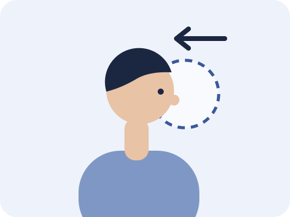
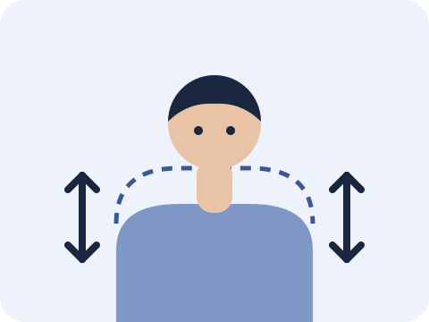

In this article
Stood up after a long meeting and found your neck and shoulders stiff? This article explains why, and shows three simple moves you can do without leaving your chair.
Why do my neck and shoulders get stiff after meetings?
Many people think neck pain comes from not sitting up straight. In fact, research suggests there is no single "correct" sitting posture that prevents pain.
Sitting very upright or slumped, held for too long, can both tire your muscles and leave you stiff or sore.
Your best posture is your next posture.
So instead of reminding yourself to "sit up straight" all day, remember this line and change position regularly.
Three moves you can do sitting down
No need to stand up and no equipment needed. During meetings or long stretches at the computer, do a round every so often.

Chin tuck
Look straight ahead and slowly draw your chin back, as if making a "double chin".
Hold 2 seconds | 5 times

Shrug and relax
Lift your shoulders up, lower them slowly, then gently squeeze your shoulder blades back.
Slowly | 5 times

Change position
For example, stand up when you take a call. This is a practical tip, not a time proven by research.
About every 30 minutes
While you do them
- Move slowly. Don't go too fast or push too hard.
- The moves shouldn't cause pain. If they do, stop.
When are these moves not enough?
Please see a doctor or physiotherapist first if you have:
- numbness or tingling in your arm or hand
- dizziness
- neck pain and headache after an injury
- pain that hasn't improved after several weeks
Common questions
Do I need to sit very straight to prevent neck pain?
Not necessarily. Research suggests no single posture prevents pain; changing position often matters more than holding a "straight" posture for a long time.
Does exercising at work help neck pain?
A review that combined several trials found that exercise done at the workplace helped neck pain in office workers. Results vary from person to person.
How often should I do these three moves?
Do a round every so often during meetings or long stretches at the computer, keeping it pain-free. If symptoms persist or warning signs appear, please see a doctor or physiotherapist.
References
- Slater D, et al. Sit up straight: time to re-evaluate. J Orthop Sports Phys Ther 2019;49(8):562–564. PubMed
- Chen X, et al. Workplace-based interventions for neck pain in office workers: systematic review and meta-analysis. Phys Ther 2018;98(1):40–62. PubMed

Anson Ko 高浩維
Registered Physiotherapist, seeing patients at Amazing Medical, Tsim Sha Tsui.About me
This article is for general reference only and does not replace professional diagnosis or treatment. If symptoms persist or warning signs appear, please see a doctor or physiotherapist.